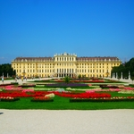
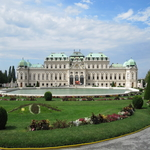
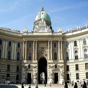
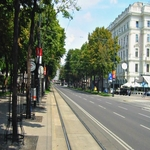

Schönbrunn Palace

Schönbrunn Palace with its surrounding buildings and the huge park is one of the most significant cultural monuments in Austria. The castle was build to rival French Versailles in Baroque beauty and importance but House Habsburg lacked funds to outdo its rivalling nation France.
In earlier times it served as summer residence to various Habsburg rulers.
Emperor Franz Joseph (ruled 1848-1916), who was born here in 1830, spent the last years of his life entirely in Schönbrunn. In 1918, the palace became the property of the new republic. Due to this historical importance, its beautiful location and its gardens this palace is one of the very top sights in Vienna. Furthermore the entire complex was added to the UNESCO's world cultural heritage list.
Schönbrunn Palace is open daily, including public holidays, from 8am to 5:30pm.
Ticket price is 17.50 euro per person.
Belvedere Palace

The two magnificient palaces on the Belvedere grounds lie in the middle of a splendid park. They were constructed for Prince Eugene of Savoy by J.L. von Hildebrandt, a famous Baroque architect.
At this time the Belvedere Palaces were still located outside Vienna's defences, but today they are a part of Vienna`s third district which is not far away from the very centre of Vienna. The Palaces' architecture and interior design are typical for Rococo style.
Today, both palaces house museums featuring Austrian painting. In the lower palace the "Österreichisches Barockmuseum" (Austrian Museum of Baroque Art) displays Austrian Art of the 18th century.
Belvedere Palace is open daily, from 9am to 6pm and on Fridays from 9am to 9pm.
Ticket price varies from 17 to 20 euro per person, subject to visitor's age.
Hofburg Palace

The Hofburg, Vienna's Imperial Palace was orignially a medieval castle, but today only the castle chapel ('Burgkapelle') demonstrates its medieval past.
The Hofburg was extended to a magnificent residence when the Habsburg's power increased. That's why one can find almost any architectural style, from gothic to art nouveau. Nowadays this enormous complex is home to "Österreichische Nationalbibliothek" (National Library), "Schatzkammer" (Imperial Treasury), and houses a collection of musical instruments, another collection of weapons, a "Museum für Völkerkunde" (Museum of Ethnography) and famous "Spanische Hofreitschule" (Spanish Riding School).
Hofburg Palace is open daily, from 9am to 6pm, including public holidays!.
Ticket prices are 13.90 euro for adults and 8.20 euro for children.
Ring Boulevard

Vienna Ring Boulevard is 4 kilometres long and circles the city centre. The construction of the Ring Boulevard was initiated by Emperor Franz Joseph I in December 1857.
The magnificent road was errected on the free space, which emerged after tearing down the former city walls, glacis and military enforcements protecting the city center, today's first district ('Innere Stadt'). By this the emperor hoped to overcome the separation of city center and the suburbs, which had officially become part of Vienna in 1850. Ring boulevard was generously planned, leaving sufficient space for a shaded avenue and monumental buildings like Hofburg, Austrian Parliament, State Opera House, Museum of Fine Arts, the first public observatory Urania and Vienna university among others.